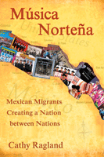

<body bgcolor="#FFFFFF" text="#000000" link="#0000FF" vlink="#CC0000" alink="#CC0000"><center><hr width="350" size="1" align="center" noshade>The first history of the music that binds together Mexican immigrant communities<hr width="350" size="1" align="center" noshade><p><a href="https://cdcshoppingcart.uchicago.edu/Cart/ChicagoBook.aspx?ISBN=9781592137466&&PRESS=temple" target="_top">Buy this book!</a> | <a href="https://cdcshoppingcart.uchicago.edu/Cart/Cart.aspx?PRESS=temple" target="_top">View Cart</a> | <a href="https://cdcshoppingcart.uchicago.edu/Cart/Cart.aspx?PRESS=temple" target="_top">Check Out</a></p><p></p></center><!--none//--><h1>M�sica Norte�a</h1>
<H2>Mexican Migrants Creating a Nation between Nations</H2>
<h3>Cathy Ragland</h3>
<P>cloth 1-59213-746-6 $85.50, Apr 09, <FONT COLOR=#990033>Available</FONT>
<br>paper 1-59213-747-4 $33.95, Apr 09, <FONT COLOR=#990033>Available</FONT>
<BR> 268 pp
6x9
2&nbsp;map(s) 22&nbsp;figures 13&nbsp;halftones
</P><BLOCKQUOTE><I><p>"Ragland's ethnomusicological approach to m�sica norte�a�s evolution and its contemporary relevance, brings the topic to life. The music is clearly a prism to examining a broad swath of social, political, economic, cultural, and communications issues. Her musical analysis is fresh, rare, and valuable."</i><BR>&#151<b>Daniel Sheehy</b>, Director and Curator,
Smithsonian Folkways Recordings</p></I></BLOCKQUOTE>
<p>M�sica norte�a, a musical genre with its roots in the folk ballad traditions
of northern Mexico and the Texas-Mexican border region, has
become a hugely popular musical style in the U.S., particularly among
Mexican immigrants. Featuring evocative songs about undocumented
border-crossers, drug traffickers, and the plight of immigrant workers,
m�sica norte�a has become the music of a "nation between nations."
<i>M�sica Norte�a</i> is the first definitive history of this transnational music
that has found enormous commercial success in norteam�rica.</p><p>
Cathy Ragland, an ethnomusicologist and former music critic,
serves up the fascinating fifty-year story of m�sica norte�a, enlivened
by interviews with important musicians and her own first-hand
observations of live musical performances. Beyond calling our
attention to musical influences, Ragland shows readers the social
and economic forces at work behind the music. By comparing m�sica
norte�a with other popular musical forms, including conjunto tejano,
she helps us understand and appreciate the musical ties that bind the
Mexican diaspora.</p>
<BR>&nbsp;<h2>Excerpt</h2><P>Excerpt available at <a href="http://www.temple.edu/tempress">www.temple.edu/tempress</a></p>
<BR>&nbsp;<h2>Reviews</h2>
<p><i>"</i>M�sica Norte�a<i> is the first book to take on such a wide-ranging consideration of this immensely important and widespread Mexican-based musical culture. Ragland makes skilled use of the narrative content of voices ranging from the corridos of Washington�s Yakima Valley to the </i>cronistas<i> on the Mexican-U.S. border. The excellent musical analyses, the careful lyrical scrutiny, and the author�s own decades-long experience make this a first-rate and unique contribution, the most authoritative and broad-based examination of music of Mexican and Mexican-American communities to date."</i><br><b>&#151T. M. Scruggs</b>, Associate Professor of Ethnomusicology at the University of Iowa
<p><i>"Ragland has written an impressive examination of the many "borderland" musics popular among Mexicans and Mexican Americans in the Tex-Mex region of the Mexico-US border. Thanks to her background as a journalist, Ragland writes in a readable style. She packs the book with thorough research, in-depth musical and lyrical analysis, and insightful theoretical discussions of social and cultural issues related to such topics as ethnic identity and transnationalization.... [A] valuable contribution to the growing body of literature on Latin American music. Summing Up: Highly recommended."</i> <br>&#151<b><i>Choice</i></b>
<p><i>"Ragland is uniquely qualified as a scholar of the popular music of Mexican immigrants in the United States. Unlike many scholarly works, </i>M�sica Norte�a<i> is written in a style accessible to general and specialist audiences alike, and...it reflects a broad, deep and intimate engagement with the subject, and all those involved in the music's infiltration into communities across the contemporary United States..."</i> <br>&#151<b><i>Folk Roots</i></b>
<p><i>"Cathy Ragland has written a splendid scholarly study of m�sica norte�a, which originated in the Mexican northern borderlands....Ragland�s brilliant and informative study.... is well done and is an excellent contribution to the history of the Chicano people�s amazingly rich and varied musical heritage.''' </i><br>&#151<b><i>The Americas</b></i>
<p><i>"Ragland recounts both a border musical history and a migrant experience that are largely invisible, often allowing the most important nortena musicians to tell it in their own words. At the same time, she expertly weaves in a good combination of contemporary critical perspectives from a variety of important scholars.... Ragland's research provides an in-depth history of migrant Mexican culture and its reception in the United States and Mexico, delving deeply into musical values and into the music itself...As such, </i>Musica Nortena<i> is a valuable new resource, sure to strike up worthwhile and memorable discussions in ethnic studies, ethnomusicology, history, anthropology and Latin American studies."</i><br>&#151<b><i>American Music</i></b>
<p><i>"[Ragland�s] musical analysis and association of the corrido with Nortena are clear and concise and represent an informative look at a music underrepresented in the literature." </i><br>&#151<b><i>Multicultural Review</i></b>
<p><i>"[This] long-anticipated book...was worth the wait. Ragland's broad-based examination of norte�a music reflects a deep engagement with this vital musical tradition that has come to represent 'the voice of a transnational and transcultural working-class diaspora.'... Ragland's winning narrative (likely because of her experience as a journalist) makes this book an easy read despite the wealth of details and the jumping back and forth in chronology. Her well-embedded musical analysis adds depth to this first-rate ethnomusicological study that goes beyond a common straightforward mapping of immigrant music to social identity.... This book is a must for scholars interested in issues of transnationalism, border culture, diasporic networking, immigration, expressive culture, identity formation and Mexican music in general." </i><br>&#151<b><i>Latino Studies</b></i>
<p><i>"[A] rich and fascinating study of a popular music genre and the Mexican migrant experience in the United States....This is a careful study of norte�a music, a genre rooted in the experiences of conflict, exploitation and marginalisation.... It succeeds in significantly widening the scope of popular music/cultural studies."</i><br>&#151<b><i>The Journal of Popular Music</b></i>
<p><i>"This book is a detailed, responsibly researched and clearly written account of an important genre of Mexican popular music: the genre with the most traditional elements, with the least respect from the Mexican pop music establishment, and with the most relevance for understanding the mosaic of cultures that makes up the United States.... Ragland illustrates her history and theses with a dozen sets of lyrics, half as many careful music transcriptions, and numerous photographs. The examples are well chosen and well rationed.... There is also an excellent bibliography and discography and a very welcome glossary.... [T]his is a fine book, with early chapters that are tidy and full and a last pair of chapters that are wonderful. There will be no need for another history of norte�a until considerable time has passed, and that intriguing history has itself moved forward."</i><br>&#151<b> <i>The Journal of Musicological Research</i></b>
<p><i>"An impressively important book for our times, </i>M�sica Norte�a<i> deals with issues of migration, diaspora, community, borders, and ethnic, racial and class tensions and discrimination.... By maintaining the focus on norte�a in changing temporal and locational contexts, Ragland presents a rich and complex analysis, moving from the macro to the micro, from politicised national contexts to individual lives.... This is a thorough and complex study...a significant addition to the growing number of recent studies on music and Mexico-US border-crossings.''' </i><br>&#151<b><i>Ethnomusicology Forum</b></i>
<BR>&nbsp;<h2>Contents</h2><P>
<p>Preface
<br>Acknowledgments
<br>Introduction
<br>1. Mexicanidad and M�sica Norte�a in the �Two Mexicos�
<br>2. Regional Identity, Class, and the Emergence of �Border Music�
<br>3. Border Culture, Migration, and the Development of Early M�sica Norte�a
<br>4. Modern M�sica Norte�a and the Undocumented Immigrant
<br>5. Los Tigres del Norte and the Transnationalization of M�sica Norte�a in the Working-Class Mexican Diaspora
<br>Conclusion
<br>Glossary
<br>References
<br>Selected Discography
<br>Interviews
<br>Index
</P><BR>&nbsp;<H2>About the Author(s)</H2>
<table><tr><td valign="top"><img src="/tempress/authors/1957_au1.gif" height="90" width="75"></td><td width="100%" valign="middle"><p><b>Cathy Ragland</b> is Assistant Professor of Ethnomusicology in the Department of Music and Dance at the University of Texas, Pan American. She is a former music critic for the <i>San Antonio Express-News</i>, <i>Seattle Times</i> and <i>Austin American-Statesman</i>, where she wrote about Texas-Mexican music and m�sica norte�a, among other popular genres. She also cofounded the Mariachi Academy of New York, a community-based music program for youth in East Harlem.</P></td></tr></table>
<BR><H2>Subject Categories</H2>
<p><A HREF="/tempress/latino.html" TARGET="_top">Latino/a Studies</a>
<BR><A HREF="/tempress/music.html" TARGET="_top">Music and Dance</a>
<BR><A HREF="/tempress/american.html" TARGET="_top">American Studies</a>
</p>
<BR><h2 class="inpageheading">In the series</H2>
<P><I><a href="http://www.temple.edu/tempress/latin_music.html" onMouseOver="window.status='Click for other books in this series!'; return true;" onMouseOut="window.status=''; return true;" target="_top">Studies in Latin American and Caribbean Music</a></i>, edited by Peter Manuel.
</p><p><i>Studies in Latin American and Caribbean Music</i>, edited by Peter Manuel, aims to present interdisciplinary studies in the traditional and contemporary musics of Latin America and the Caribbean.</p>
<p align="center"><a href="https://cdcshoppingcart.uchicago.edu/Cart/ChicagoBook.aspx?ISBN=9781592137466&&PRESS=temple" target="_top">Buy this book!</a> | <a href="https://cdcshoppingcart.uchicago.edu/Cart/Cart.aspx?PRESS=temple" target="_top">View Cart</a> | <a href="https://cdcshoppingcart.uchicago.edu/Cart/Cart.aspx?PRESS=temple" target="_top">Check Out</a></p><p><font face="Arial" size="1"><a href="copyright.html" onMouseOver="window.status='Web Copyright Policy';return true;" onMouseOut="window.status=''" title="Web Copyright Policy">&copy;</a> 2015 <a href="http://www.temple.edu" target="new" onMouseOver="window.status='Link to Temple University home page';return true;" onMouseOut="window.status=''" title="Link to Temple University home page">Temple University</a>. All Rights Reserved. http://www.temple.edu/tempress/titles/1957_reg.html</font></p>